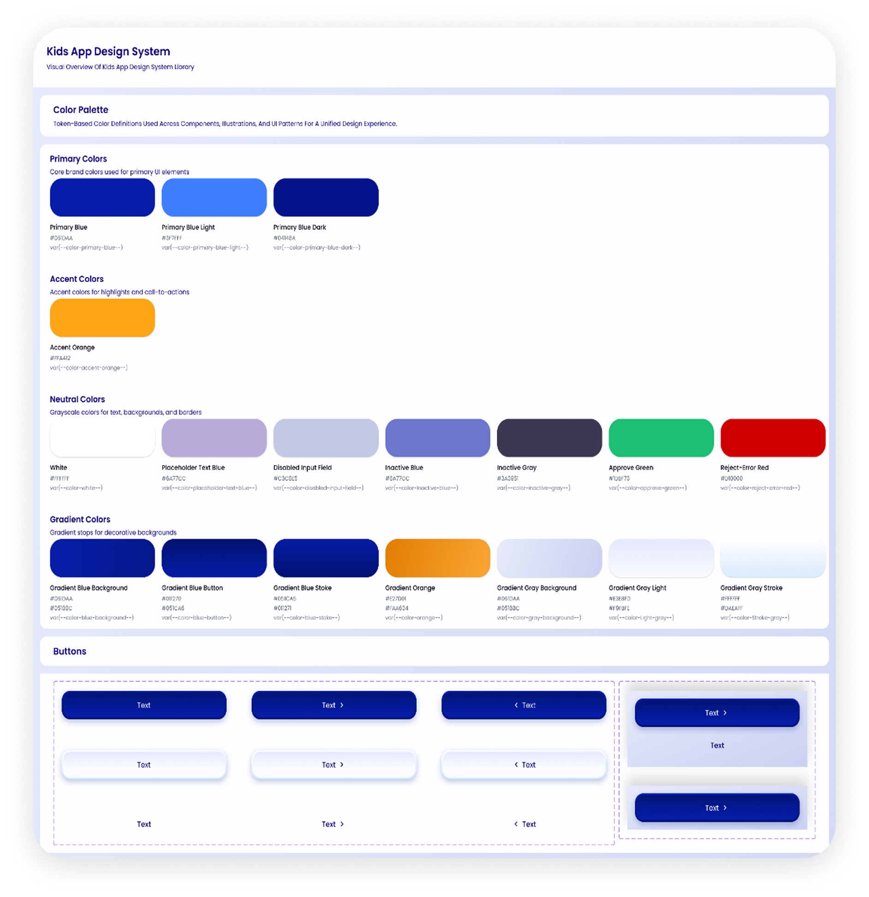
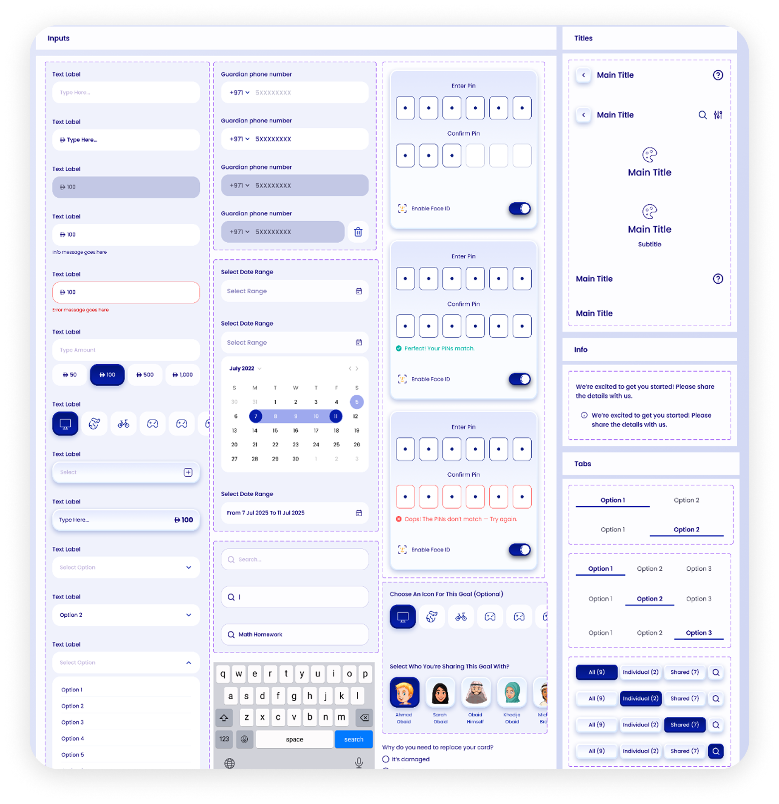
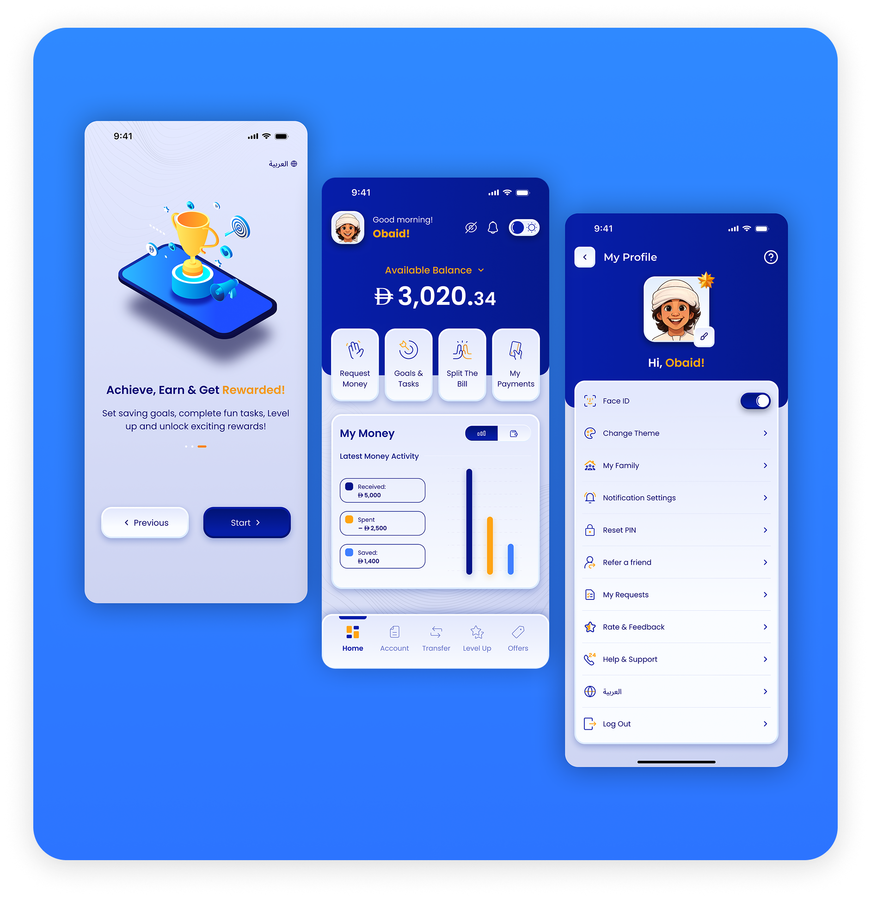
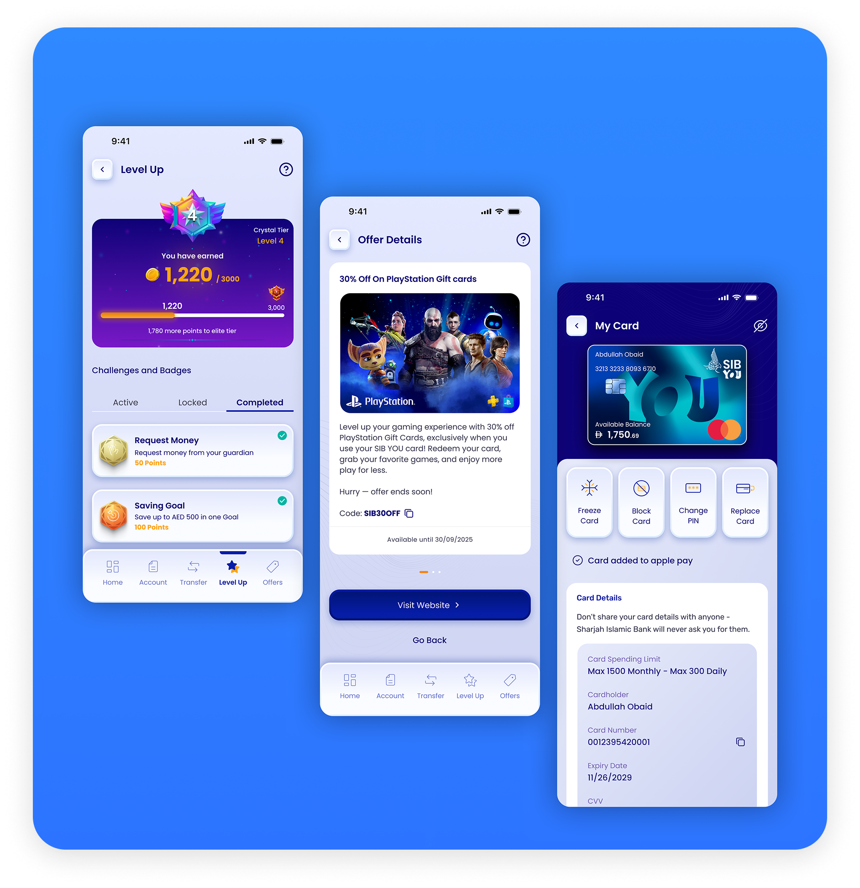

Rebuilding Trust in Digital Banking —
The Story Behind SIB's New Kids App
The Sharjah Islamic Bank (SIB) Kids App presented a unique challenge: creating a safe, educational, and engaging banking experience for users aged 10–16 — something that did not previously exist within the bank's digital ecosystem.
At the time, the bank's primary customer base consisted largely of older users, creating a significant gap in engaging younger audiences. The strategic goal was clear: attract users at a young age, foster brand loyalty, and create a seamless pathway into full banking services as they grow older.
The challenge was to design an experience that balanced simplicity for young users, engagement and motivation, financial education, and trust for parents — all within the constraints of a regulated banking environment.
The project began with a deep research phase focused on understanding both children and their parents. Activities included competitive benchmarking of local and international kids banking apps, user interviews with children and parents, persona creation, and behavioral analysis to uncover motivations, frustrations, and expectations.
The research covered multiple user segments across age groups 10–16 and both parents and children, producing insights that became the foundation for every design decision that followed.
Phase 02Using research insights, I mapped end-to-end user journeys, defined the information architecture, structured navigation and content hierarchy, and designed task flows optimized for younger users. The experience was carefully crafted to align with how children think, learn, and interact with digital products.
Phase 03I established the product's visual foundation by building a complete design system from scratch — including a color palette, typography, spacing rules, component library, and interaction guidelines. Design tokens and variables ensured scalable, consistent decisions and streamlined handoff with developers.


Every design decision focused on creating a playful yet intuitive experience that balanced engagement with usability while maintaining the trust expected from a banking product. The final screens covered onboarding, home dashboard, goal setting, transfers, card management, and gamification features.


I conducted usability testing sessions with target users across multiple age groups. Testing identified friction points and refined flows until key tasks could be completed quickly, confidently, and independently by children without parental assistance.
OutcomesThe final product is a fun, intuitive, and engaging banking experience tailored specifically for young users while maintaining the security, transparency, and parental controls required by families. The app is now ready for launch.